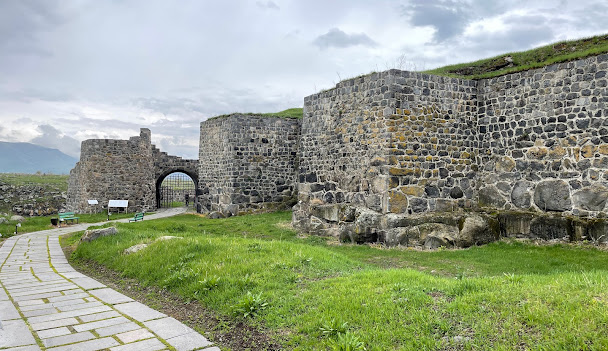
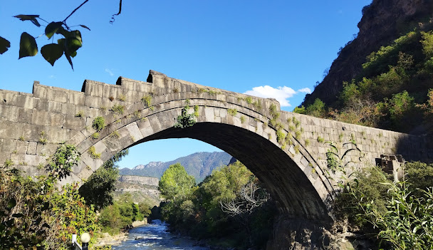

Լոռի
Լոռու մարզ, մարզի կարգավիճակ ունեցող վարչատարածքային միավոր Հայաստանի հյուսիսում։ Զբաղեցնում է պատմական Հայաստանի Գուգարաց նահանգի արևելյան հատվածն ու Այրարատ նահանգի Նիգ գավառի հյուսիսային տիրույթները։
Անվանում
«Լոռի» անվանումն առաջին անգամ հիշատակվում է 11-րդ դարում և կարող է փոխկապակցված լինել լոր թռչնի անվան հետ։ Այդ տարում Հայաստանի հյուսիսում կառավարած Դավիթ Ա Անհողին Կյուրիկյան արքան Ձորագետ և Ուռուտ կիրճերի հատման մասում հիմնադրում է Լոռի կամ Լոռե բերդը, որը 1065 թվականին դառնում է Անիի Բագրատունյաց թագավորությունից անկախացած Տաշիր-Ձորագետի թագավորության քաղաքամայր-ոստանը[3]։ Բերդի անունով թագավորությունը երբեմն անվանվում է նաև Լոռու թագավորություն[4]։ Հետագայում, «Լոռի» անվանումը տարածվում է ամբողջ Տաշիրի գավառի վրա[5]։ Այսպես են անվանակոչվում պատմական Հայաստանի Գուգարք նահանգի ահմաններում գտնվող մի շարք աշխարհագրական օբյեկտներ, այդ թվում՝ Լոռիգետն ու Լոռվա սարահարթը։ «Լոռի» անունով գյուղեր հայտնի են նաև Արևմտյան Հայաստանի Կարսի մարզի Արդահան և Տրապիզոնի վիլայեթի Գյումուշխանեի գավառում։
Ֆիզիկա-աշխարհագրական բնութագիր
Լոռու մարզը Հայաստանի տարածքի մեծությամբ երրորդ մարզն է 3789 կմ² տարածքով (Հայաստանի տարածքի 12.7 %-ը)։ Այն հարավ-արևմուտքում սահմանակցում է Արագածոտնի, հարավ-արևելքում՝ Կոտայքի, արևմուտքում՝ Շիրակի և արևելքում՝ Տավուշի մարզերին։ Հյուսիսում սահմանակցում է Վրաստանին։
 